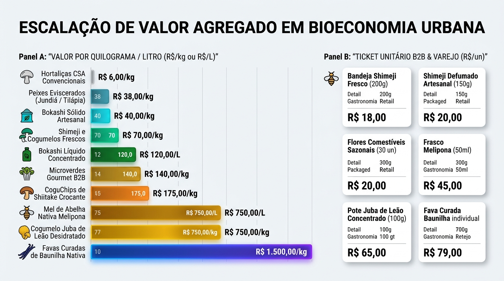
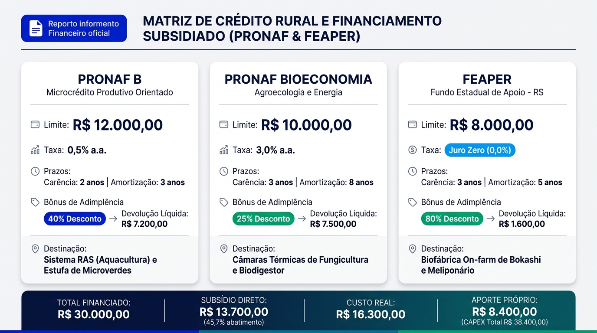
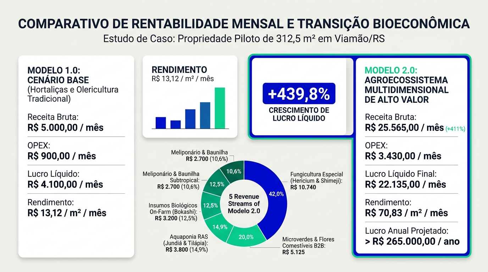

A viabilidade financeira e a soberania alimentar de micropropriedades periurbanas esbarram historicamente no limite biológico de monocultivos de hortaliças e em legislações municipais de posturas zootécnicas restritivas. Através da modelagem metabólica em ciclo fechado, a transição para um agroecossistema 2.0 substitui a dependência de cabazes semanais de baixo valor agregado por uma matriz biotecnológica integrada: aquaponia com espécies nativas, fungicultura funcional nootrópica, manufatura de fertilizantes orgânicos e saneamento energético anaeróbio.
Simulador 3D: Master Plan Bioeconômico & Zoneamento Físico-Metabólico (312,50 m²)
Navegue interativamente pela modelagem tridimensional do lote periurbano de 10,00 × 31,25 m (312,50 m²) em Viamão/RS, com a casa totalmente modelada e mobiliada em 3D (Sweet Home 3D Models). Explore a volumetria completa do terreno ou selecione os setores nas abas para transladar a câmera com foco e telemetria detalhada de cada unidade de produção:
Diagnóstico crítico do modelo base e estrangulamentos estruturais
A análise técnica de um lote padrão periurbano de 312,50 m² (10,00 m de testada por 31,25 m de profundidade) situado em clima subtropical úmido (Cfa em Viamão/RS, latitude 30° S) demonstra uma base agroecológica robusta fundamentada na Escala de Permanência de Keyline, canteiros biointensivos e SAFs sintrópicos perimetrais. No entanto, quando submetido à exigência de autossuficiência calórico-proteica do agregado familiar e maximização de margem pecuniária por metro quadrado, o arranjo tradicional manifesta três gargalos limitantes:
A transição para a Arquitetura 2.0 resolve simultaneamente esses três estrangulamentos através do acoplamento sinérgico de cinco novos motores produtivos em circuito fechado, desenhados para operar com densidade volumétrica vertical e fluxo contínuo de massa e calor.
Fecho do ciclo proteico: Aquaponia subtropical em recirculação (RAS)
Para contornar o Art. 77 da Lei 2.041/90 sem gerar passivos odoríferos ou efluentes superficiais, a zootecnia de vertebrados terrestres é substituída por um Sistema de Recirculação de Água (RAS) acoplado a bancadas de fluxo laminar de nutrientes (NFT). A aquicultura em sistema fechado opera amparada pela Lei Federal nº 11.959/2009 e pelas Resoluções CONSEMA/RS nº 372/2018 e nº 549/2026 (CODRAM 119,51 e 119,52), com enquadramento de Não Incidência de Licenciamento Ambiental para áreas alagadas inferiores a 2,00 ha e dispensa de outorga de água no SIOUT/RS para captação sob 2 m³/dia (Uso Insignificante).
O consórcio zootécnico sazonal acopla a rusticidade termotolerante de verão da tilápia-do-Nilo (Oreochromis niloticus) ao crescimento e sobrevivência invernal do jundiá nativo (Rhamdia quelen), espécie bentônica fisiologicamente adaptada às amplitudes térmicas do inverno gaúcho:
| Parâmetro Zootécnico & Operacional | Tilápia-do-Nilo (O. niloticus) | Jundiá Nativo (R. quelen) | Protocolo de Manejo Integrado ARP |
|---|---|---|---|
| Janela Térmica Ótima | Outubro a Abril (> 22 °C) | Ano inteiro (tolerância 8 a 28 °C) | Estocagem escalonada: pico de jundiá no inverno e tilápia no verão. |
| Densidade de Estocagem RAS | 15 a 30 kg/m³ útil | 15 a 45 kg/m³ útil | Regime cruzeiro de 30 kg/m³ (90 kg de biomassa viva nos 3 m³ instalados). |
| Exigência de Proteína Bruta (PB) | 32% PB (inicial) → 28% PB (engorda) | 41–51% PB (inicial) → 32–35% PB | Ração extrusada 1–2 mm até 60 dias, evoluindo para 3–5 mm (2 tratos diários). |
| Manejo de Efluentes e Lodo | Taxa de excreção fecal volumosa | Hábito bentônico consome restos da coluna | Purga decantadora a cada 30 dias; lodo rico em N e P canalizado à fábrica de Bokashi. |
A equação quantifica o aporte estequiométrico que irriga as bancadas NFT de hortaliças: cada quilograma de ração comercial de 32% PB metabolizado pelos peixes libera aproximadamente 30 g de nitrogênio elementar na água. No biofiltro com mídias K1 submersas e aeradas continuamente por compressores de diafragma 24V DC, bactérias autotróficas das linhagens Nitrosomonas e Nitrobacter oxidam a amônia tóxica (NH3/NH4+) sucessivamente em nitrito (NO2−) e nitrato (NO3−), nutriente primário assimilado diretamente pelas raízes das folhosas.

Hiperdensidade na Zona 0: Fungicultura funcional, microverdes e baunilha
A Zona 0 (65 m² de implantação residencial) converte 10 m² de sua estufa adjacente em uma Câmara Climatizada de Frutificação Micelial com controle micrométrico de temperatura (18 a 22 °C), umidade relativa (85% a 95%) e exaustão forçada de CO2 (< 1.000 ppm). Essa unidade viabiliza a transição da olericultura convencional para três linhas biotecnológicas de alto retorno:
- Fungicultura Nootrópica e Gastronômica: Cultivo intensivo de Juba de Leão (Hericium erinaceus) e Shimeji (Pleurotus ostreatus, djamor, citrinopileatus) em blocos axênicos de serragem suplementada com farelos. A Juba de Leão atinge R$ 180 a R$ 350/kg desidratado e R$ 89,00 por frasco de extrato hidroalcoólico duplo (30 ml) com padronização de erinacinas e hericenonas.
- Microverdes e Flores Comestíveis B2B: Bandejas verticais sob iluminação LED espectral especializada (pleno espectro fotossintético PAR) cultivando rabanete, girassol, ervilha, capuchinha e borragem, escoadas sob contrato direto com restaurantes gastronômicos de Porto Alegre (R$ 20,00 a R$ 24,00 por pack de flores).
- Tutoriamento de Baunilha Brasileira (Vanilla chamissonis): Aproveitamento da sombra e dos fustes lenhosos do Mini-SAF Sintrópico na Zona 2 como tutores vivos para orquídeas aromáticas nativas do bioma Mata Atlântica/Pampa, cujas favas curadas alcançam cotações superiores a R$ 4.000,00/kg no mercado gourmet.
Economia circular termodinâmica: Biodigestão anaeróbia e fábrica de Bokashi
A estabilidade biológica da micropropriedade depende do fechamento estrito dos balanços de massa e energia. A fração de resíduos domésticos e perdas hortícolas é processada em um biodigestor anaeróbio contínuo com isolamento térmico por lã de rocha e câmara inflável de geomembrana de PVC flexível (1,5 m³ de câmara fermentativa). O bioprocesso gera 0,60 m³/dia de biogás, volume suficiente para suprir integralmente o consumo diário de cocção do domicílio (equivalente a 1 botijão P13 de GLP a cada 25 dias a custo zero).
Simultaneamente, a fração residual do substrato exaurido de cogumelos (SMS — Spent Mushroom Substrate), rica em lignocelulose parcialmente degradada por enzimas fúngicas, é unida ao lodo sedimentado no decantador da aquaponia e inoculada com Micro-organismos Eficientes (EM-1: bactérias lácticas, leveduras e actinomicetos) para a fabricação on-farm de Bokashi:
O Bokashi Sólido resultante da fermentação anaeróbia (14 a 21 dias a pH 3,8–4,2) apresenta teores elevados de aminoácidos livres, quelatos orgânicos e auxinas de crescimento. Metade da produção mensal (40 kg sólidos e 10 L de extrato líquido concentrado) é comercializada regionalmente a R$ 25,90/kg e R$ 78,90/L, gerando receita líquida de subprodutos a partir de biomassa residual que em arranjos convencionais constituiria passivo ambiental.

Arquitetura financeira e matriz de rentabilidade comparada
A engenharia financeira da transição 2.0 foi calculada para um horizonte de amortização plurianual combinando veículos públicos de crédito rural subsidiado para a agricultura familiar com DAP/CAF ativo no município de Viamão. O confronto quantitativo detalhado entre o Modelo Base (hortaliças CSA puras) e o Modelo 2.0 (multicartela de alto valor agregado) evidencia um salto de rentabilidade operacional de 440%:
| Linha Produtiva & Ativo Comercial | Área / Volume Alocado | Produção Mensal Efetiva | Receita Base 1.0 (R$) | Receita Modelo 2.0 (R$) |
|---|---|---|---|---|
| Hortaliças Biointensivas (Cestas CSA) | 167,50 m² (Zona 1) | 20 cotas familiares (semanal) | 5.000,00 | 5.000,00 |
| Cogumelos Frescos & Defumados (Pleurotus/Shiitake) | 6 m² verticais (Zona 0) | 60 kg frescos + 50 packs defumados | 0,00 | 6.400,00 |
| Fungicultura Funcional (Juba de Leão Seco/Extrato) | 2 m² verticais (Zona 0) | 4 kg desidratado + 20 frascos 30 ml | 0,00 | 4.630,00 |
| Kits Vivos, CoguChips & Risotos Desidratados | Bancada de expedição Zona 0 | 25 blocos + 20 chips + 10 risotos | 0,00 | 2.940,00 |
| Flores Comestíveis & Microverdes B2B (Porto Alegre) | 2 m² estantes LED + Zona 1 | 60 packs flores + 80 bandejas microverdes | 0,00 | 2.920,00 |
| Excedente de Pescado RAS & Hidroponia NFT | 3 tanques 1.000 L (8 m² Zona 1) | 25 kg peixe limpo + 120 maços NFT | 0,00 | 1.150,00 |
| Fábrica de Bokashi (SMS + Lodo) & Mel ASF | Zona 0 (reatores) + Zona 2 | 40 kg sólido + 10 L líquido + 2 L mel | 350,00 | 2.525,00 |
| FATURAMENTO BRUTO CONSOLIDADO | 312,50 m² (Lote Integral) | Matriz Pluridimensional 3D | 5.350,00 / mês | 25.565,00 / mês |

A verdadeira sustentabilidade da agricultura periurbana não reside na expansão horizontal da terra, mas no adensamento metabólico tridimensional. Ao transformar os passivos de uma cadeia produtiva nos nutrientes de arranque da seguinte, o agroecossistema atinge autossuficiência hídrica, energética e de fertilizantes, multiplicando a margem líquida por cinco e blindando a família contra oscilações macroeconômicas.
Metodologia e referências bibliográficas
- CONSELHO ESTADUAL DO MEIO AMBIENTE (CONSEMA/RS). Resolução CONSEMA nº 372/2018 e alterações compiladas até a Resolução nº 549/2026: Fixação de portes e potenciais poluidores para atividades aquícolas no RS. Porto Alegre, RS: SEMA, 2026.
- EMBRAPA CLIMA TEMPERADO. Criação de jundiá (Rhamdia quelen) em sistema de recirculação de água e consórcio com hortaliças em regiões de clima subtropical. Pelotas, RS: Embrapa, 2022.
- FORTIER, J.-M. The Market Gardener: A Successful Grower's Handbook for Small-Scale Organic Farming. Gabriola Island: New Society Publishers, 2014.
- MINISTÉRIO DO DESENVOLVIMENTO AGRÁRIO E AGRICULTURA FAMILIAR (MDA). Manual de Crédito Rural: Diretrizes Operacionais do Pronaf B (Microcrédito) e Pronaf Bioeconomia. Brasília, DF: MAPA/MDA, 2025.
- SECRETARIA DA AGRICULTURA, PECUÁRIA, PRODUÇÃO SUSTENTÁVEL E IRRIGAÇÃO (SEAPI/RS). Manual Operativo do Fundo Estadual de Apoio ao Desenvolvimento dos Pequenos Estabelecimentos Rurais (FEAPER/RS). Porto Alegre: Governo do Estado do RS, 2025.
- Documentação técnica dos pipelines de modelagem agronômica e bioeconômica da ARP (2026).